Two ants at the rock edge.
STILL BARS MET · MOTION GATES UNMET
Fresh blind review passed original-doodle identity and sampled source framing/pose. Whole-shot SAM fit is invalid because cached instance targets change and coverage ends at 2.0s. Zero verified planted intervals; classifier and actual normal-speed playback approval remain unrun. No training ran.
Eight observed configurations.
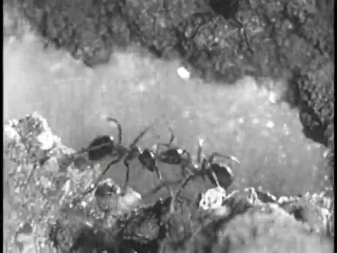
Two ants face one another across the gap; the left abdomen is almost level with its thorax.
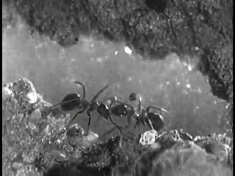
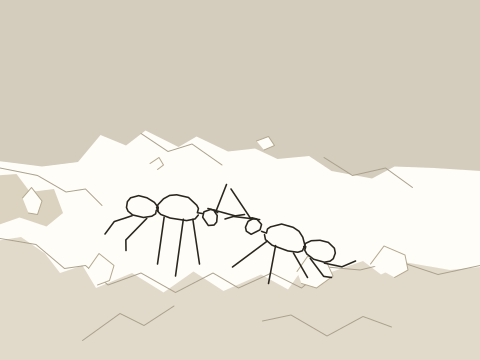
Antennae change reach while both body chains remain near their starting placement.
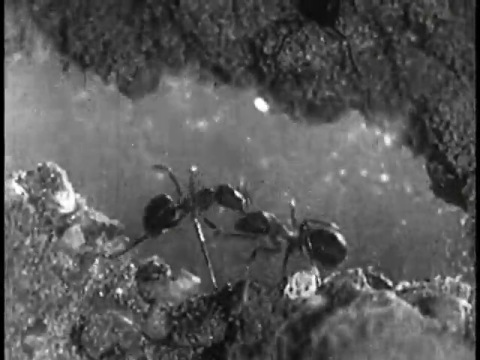
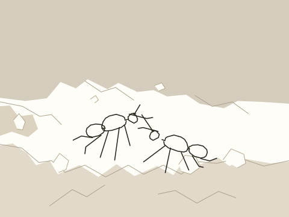
Left head rises and abdomen swings below it; right ant keeps a lower diagonal body.
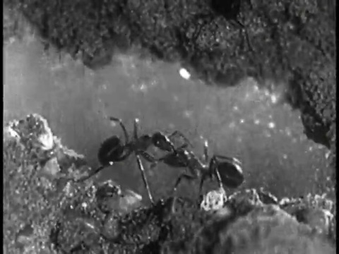
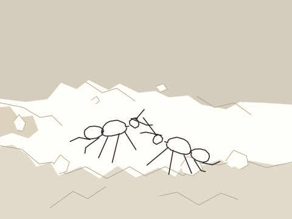
Left head settles; unequal lower leg reaches change over the same rock edge.
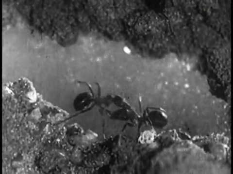
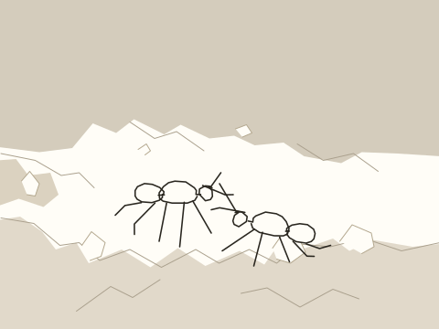
Near antennae draw closer as right head dips.
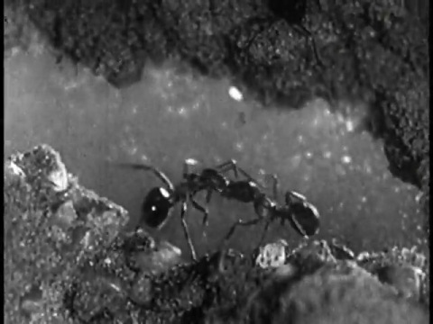
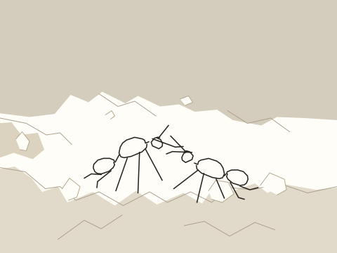
Left abdomen drops while the heads remain near the shared center.
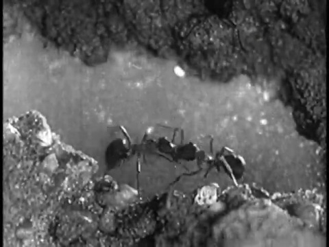
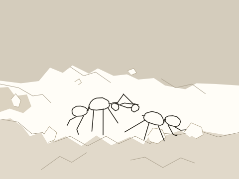
Left abdomen lifts again; right ant reaches farther right.
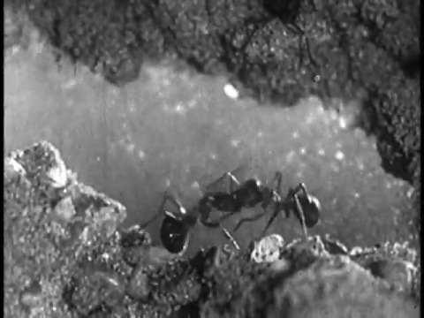
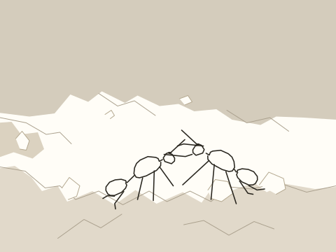
Left abdomen drops toward the lower bank as both heads shift right; retain both ants.
Drawing, footage and checks
Quick, Draw! ant key5421013154136064, used twice. The three body sections, two antenna strokes and five leg strokes remain the original drawing. A sixth anatomical leg is not invented.
The original source plan described one ant. Source inspection rejected that assumption before drawing: both ants are visible throughout the retained interval0.200–2.200s. The opening cut is excluded.
Archive: Ant City (1949). Archive reports public_domain; that report is retained without independent rights verification.
One rock plate follows background-only camera registration. Body centers and unequal leg/antenna endpoints are source-keyed estimates; material foot and antenna-contact identities remain unverified.
Trace minimum recall0.9957; pieces retained1.0000; gatepasses. Whole-shot mask fit is invalid: SAM alternates a single ant and both ants, and its last nominal sample is2.0s. Final0.2s has no independent cached mask. No final mask is reused beyond its sample.
Editable timeline · Source record · Part compatibility · Correspondence · Camera · Checks · Trace · SAM provenance · Mask inspection · Original doodle · Source contact sheet ·Independent review1 · Independent review2


Classifier and independent normal-speed playback approval remain unrun. No training ran. This is not an accepted training pair.